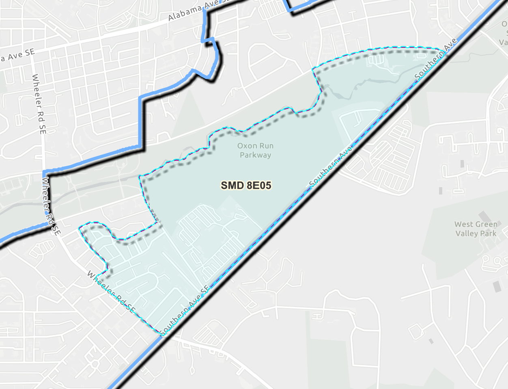

ANC 8E05 has no names on the ballot. Your write-in vote decides who represents us.
Our seat on Advisory Neighborhood Commission 8E is open, and the winner will be chosen by write-in votes. Below are the neighbors who completed this site's candidate questionnaire, their answers side by side, and how to cast a write-in vote that counts.
No candidates' names are printed on the ballot for this office, so the only choice is a write-in.
On your official ballot, write your candidate's full name on the line and fill in the oval.
An illustration of the 8E05 section of the 2026 ballot, not an official ballot.
Key dates
- Mon, Oct 26 – Sun, Nov 1Early voting, 8:30 a.m. to 7 p.m.
- Tue, Nov 3Election Day, 7 a.m. to 8 p.m. Mail ballots must be postmarked or in a drop box by today.
- Tue, Nov 10, 5 p.m.Deadline for write-in candidates to file their affirmation with the Board of Elections.
Is 8E05 my SMD?
Single Member District 8E05 is one of nine districts in Advisory Neighborhood Commission 8E in Ward 8. It includes neighborhoods along Southern Ave between Mississippi Ave and Wheeler Road.

The surest way to check is to enter your address in the DC government's ANC lookup. If it says 8E05, this page is about your seat.
This site covers 8E05 only. For other districts, and for the most up-to-date election information, always check with the DC Board of Elections.
Back to topWho is running?
These residents have filed with the Board of Elections and/or completed this site's unofficial candidate questionnaire by the October 24 deadline. They're listed in alphabetical order by last name, and their answers appear exactly as submitted. How candidates are listed
This may not be every candidate. Any eligible resident can still file as a write-in with the Board of Elections until 5 p.m. on November 10. Check the Board's official list of write-in candidates before you vote.
No candidates completed the questionnaire by the October 24 deadline.
Compare candidates' answers
Open a question to see every candidate's answer to it.
How to vote for a write-in
- Find the race on your ballot. Look for the box labeled "ANC-8E05." It has no names in it, only a write-in line.
- Write the candidate's full name on the line, spelled the way they ask.
- Fill in the small oval in the top-right corner of that box so the scanner counts your vote.
Write in someone who is eligible and has filed
If the person with the most write-in votes isn't eligible, or never files the affirmation form, they can't win and the seat remains empty; the runner-up doesn’t even get it.
Check the list above for each candidate's filing status.
Ways to vote
- By mail: every registered DC voter is mailed a ballot. Return it by mail, postmarked by November 3, or put it in any official drop box.
- Early, in person: October 26 to November 1, 8:30 a.m. to 7 p.m., at any early vote center.
- On Election Day: November 3, 7 a.m. to 8 p.m.
Find a vote center or drop box, check your registration, and confirm all dates with the DC Board of Elections.
Back to topWhat does an ANC do?
- An Advisory Neighborhood Commissioner is an unpaid nonpartisan neighbor elected to represent about 2,000 residents for two years.
- Commissioners advise the city. They are not members of the City Council, and they can't do much on their own, but they do have some power.
- When the full commission votes on something the city notified it about, the agency that decides must answer each of the commission's concerns in writing. This is called "great weight."
- Much of the work is reviewing liquor licenses, zoning cases, and building and public space permits, and negotiating conditions with the people who apply.
- Commissioners can also take neighbors' problems (e.g. missed trash, broken streetlights, and dangerous traffic crossings) to the city staff whose job is to fix them.
- ANC 8E holds public meetings most months. Commissioners prepare, vote, and then should report back to their neighbors.
Read an unofficial guide to ANCs here, which includes what they can and cannot do and common misconceptions.
Back to topAbout this site
I'm James Earle, and I have lived in 8E05 for nearly 13 years. I built this page because no one is on the ballot for our SMD this year and I want our community to have effective and dedicated representation on our ANC.
Disclosure: I'm now also a write-in candidate for this seat after my neighbors insisted on it. I followed the same rules as every other candidate: I answered the same questions, under the same deadline and length limits, and my listing appears in alphabetical order like everyone else's. Every candidate's answers are published exactly as submitted. If you think anything on this site treats a candidate unfairly, contact me and I'll respond within 48 hours.
This is a personal project with no funding beyond my own costs, which are just $8 for the domain and the time it takes to create and maintain this site.
How candidates are listed
- Anyone who completed the questionnaire and its eligibility statements by October 24, ten days before the election, is listed. No one has been added since.
- Responses are published as submitted.
- Candidates appear in alphabetical order by last name.
- "Affirmation filed" means I've confirmed the candidate filed with the Board of Elections. Otherwise the listing says "Not yet confirmed." You can find the BOE's official List of General Election Write-in Candidates here.
Corrections
See something wrong? Contact me here and I'll fix it within 48 hours.
Back to top